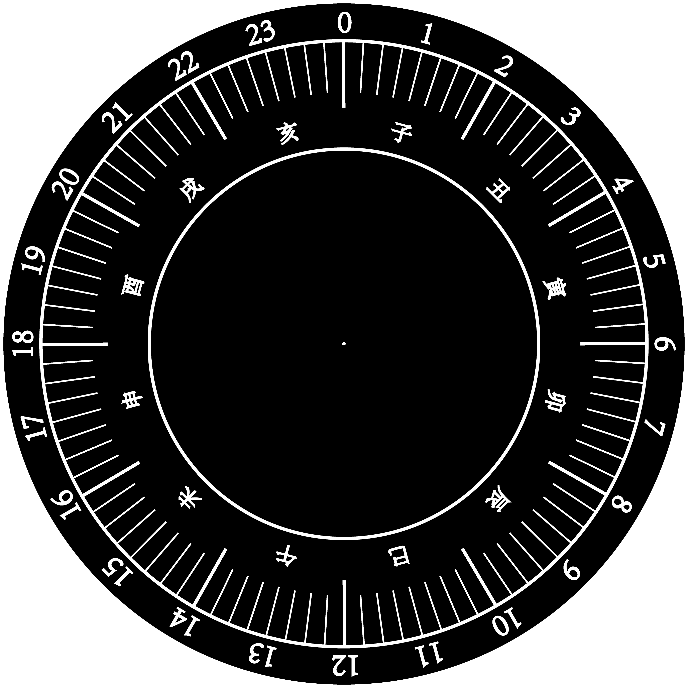

赤道式日晷
赤道式日晷简介
赤道式日晷，适合中低纬度地区使用，是中国古代最传统的天文观测仪器。北京故宫等处保存的便是清代制造的石质赤道日晷。依照使用地的纬度，使晷面平行于赤道面。晷盘上的刻度是等分的，夏季和冬季轴投影在晷盘上影子会分别在晷盘的北面和南面。
日晷星盘图
日晷星盘，此处为方便读者理解，在对应时辰处标记了小时制。
时辰制
十二时辰制
西周时就已使用。汉代命名为夜半、鸡鸣、平旦、日出、食时、隅中、日中、日昳、晡时、日入、黄昏、人定。又用十二地支来表示，以夜半二十三点至一点为子时，一至三点为丑时，三至五点为寅时，依次递推。
【子时】夜半，又名子夜、中夜：十二时辰的第一个时辰。（23时至01时）。
【丑时】鸡鸣，又名荒鸡：十二时辰的第二个时辰。（01时至03时）。
【寅时】平旦，又称黎明、早晨、日旦等：时是夜与日的交替之际。（03时至05时）。
【卯时】日出，又名日始、破晓、旭日等：指太阳刚刚露脸，冉冉初升的那段时间。（05时至07时）。
【辰时】食时，又名早食等：古人“朝食”之时也就是吃早饭时间，（07时至09时）。
【巳时】隅中，又名日禺等：临近中午的时候称为隅中。（09 时至11时）。
【午时】日中，又名日正、中午等：（11时至13时）。
【未时】日昳，又名日跌、日央等：太阳偏西为日昳。（13时至15时）。
【申时】晡时，又名日铺、夕食等：（15时至17时）。
【酉时】日入，又名日落、日沉、傍晚：意为太阳落山的时候。（17时至19时）。
【戌时】黄昏，又名日夕、日暮、日晚等：此时太阳已落山，天将黑未黑。天地昏黄，万物朦胧，故称黄昏。（19时至21时）。
【亥时】人定，又名定昏等：此时夜色已深，人们已经停止活动，安歇睡眠了。人定也就是人静。（21时至23时）。
语义解读
晷，是中国古代的计时仪器。在汉语中，“晷”也意味着太阳和时间投下的阴影。从语义学上，可以看出太阳与时间的关系。
晷盘为何两面刻字？
这与地球的公转息息相关。以我们生活的北半球为例，晷盘南高北低，由于从春分到秋分期间，太阳总是在天赤道的北侧运行，因此，晷针的影子投向晷面上方；从秋分到春分期间，太阳在天赤道的南侧运行，因此，晷针的影子投向晷面下方。所以在观察日晷时，首先要了解两个不同时期晷针的投影位置。
晷盘与晷针的位置如何确定？
同样以我们生活的北半球为例，晷盘南高北低，目的是使得晷面与赤道面平行，晷针与地轴平行（指向北天极），晷针延长线与地面的夹角度数为当地纬度值，这样晷针就能始终有规律地投影在晷面上。
日晷随时都可用吗？
在春秋分日或是太阳被云遮挡的日子以及夜晚，日晷便失去了它的用武之地。 需要注意的是，春秋分日，昼夜平分，太阳的运行轨面与赤道面垂直，如此一来，晷面上只有晷针的东西两侧有晷针影子的长短变化（南北侧均无投影），自然无法在晷盘上读出一日的时辰变化。因此古人又继续发明出了月晷，星晷，漏刻（漏是指带孔的壶，刻是指附有刻度的浮箭）等一系列辅助观时、计时仪器。《清史稿·时宪志一》中有记载：“此外更有星晷、月晷，以备夜测之用”。
 DDesignees
DDesignees